▣ CNC Press Brake
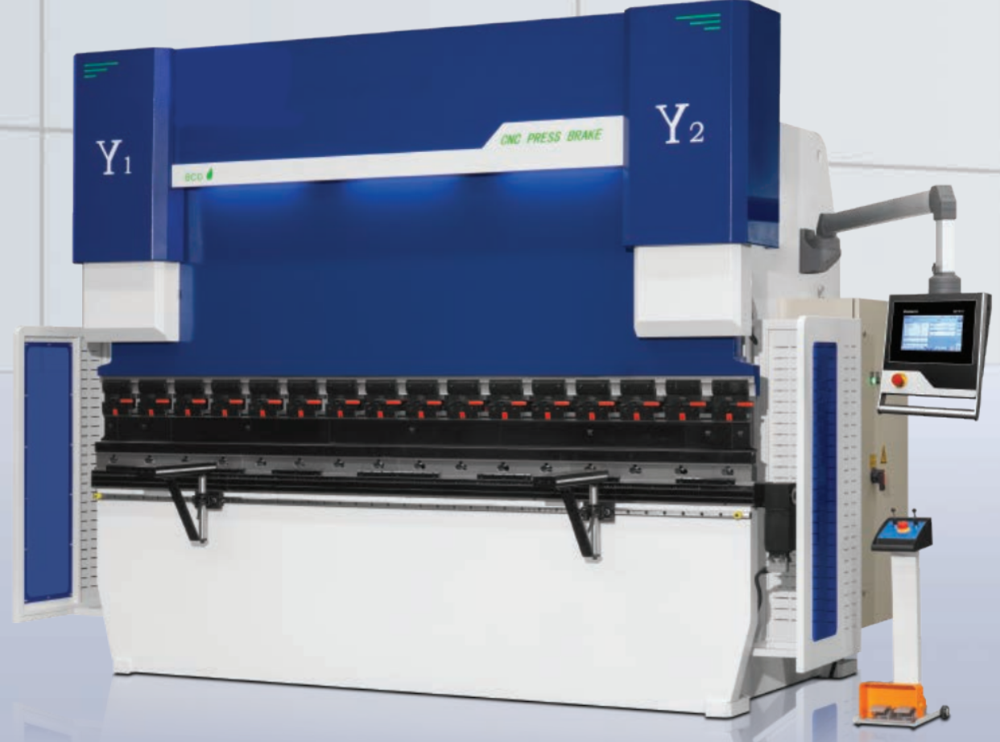
Main features: Closed loop with electro-hydraulic servo valve (Germany) & HEIDENHAIN grating ruler; back gauge with multiple shafts; overall welded body stress-relieved by vibration aging; ANSYS analysis; integrated hydraulic system (Germany); DELEM DA53T controller; C-shaped plates for grating ruler; oil cylinder with Japanese seals; EMB pipe connections.
Standard 4+1 axis (Y1,Y2,X,R+V). Options: laser safety, electrical Z1/Z2 with pedal, front support.
Main parts: Estun servo, Schneider electrics, Rexroth valve, Sunny pump, DA53T, EMB connectors, Fargo grating ruler.
✧ CNC Waterjet Cutting

Flying-Arm CNC Cutting Table:
1/ Fly arm, three sides open for easy load/unload
2/ CNC body aparted from table
3/ Cast iron body, stable and holding mechanical precision
Abrasive cutting system: cutting head, high pressure water switch (pneumatic, CNC controlled), abrasive control valve (auto suck sand, manual adjust, CNC assistant).
High pressure system C50V EHV: FLOW bi-directional single-cylinder reciprocating supercharger, HSEC accumulator (Germany), metal-to-metal sealing, Rexroth pump, Siemens PLC, main motor SIEMENS, electronic commutation, 10Micron water filter, manual voltage regulation, overpressure/under voltage protection, self-diagnosis. 413MPa, 380MPa continuous, 3.8L/min, accumulator 1L, 37KW/50HP.
Options: Auto-Garnet, Oil Chiller, customized voltage/table size.
⚙ PE Butt Fusion Welder
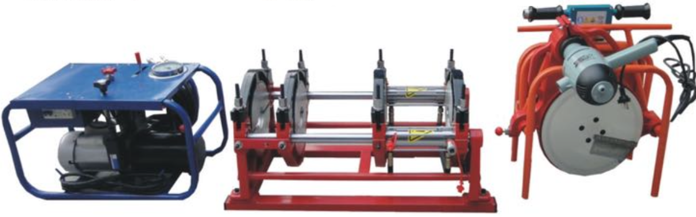
90-250mm PE Hydraulic Butt Fusion Welding machine, 75-250mm version adds 75mm tiles on the 90-250mm machine with same parameters.
Hydraulic semi-auto, container package, sea transport.
▣ CNC Surface Grinder 5425
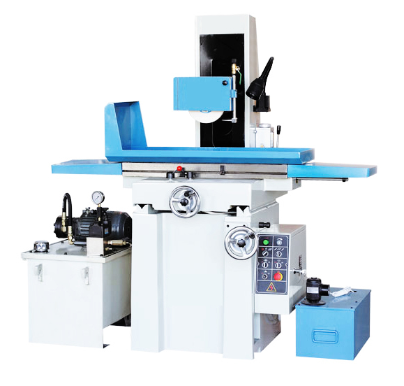
Structure: cross saddle, one V one flat guide rail, manual precision scraping, servo + ball screw drive, automatic fast forward/backward.
Spindle: NSK angular contact bearings, permanent grease lubrication, thermal deformation minimized.
CNC system: new generation 3-axis, free programming, automatic wheel compensation, three-axis linkage, pulse handwheel (0.001/0.01/0.1mm).
Accessories: TBI screw, electronic oil pump, permanent magnet chuck 500×200mm, fully enclosed cover.
▣ CNC Surface Grinder 4080
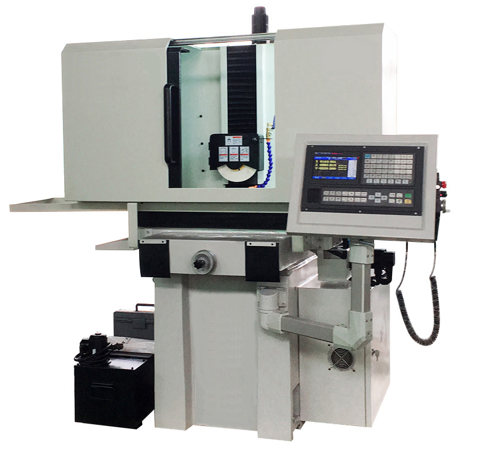
Cross saddle structure, one V one flat guide rail, manual precision scraping. Servo + ball screw drive for X/Y/Z, automatic fast forward/backward, precise positioning.
GS986 CNC system, free programming, pulse handwheel. Semi-enclosed cover (full cover option). Automatic intermittent lubrication, NSK spindle bearings, three-axis TSW dust protection sleeve.
Standard accessories: work lights, strong electromagnetic suction cup 800×400, tool box, diamond pen, etc.
✧ CNC Guillotine Shear
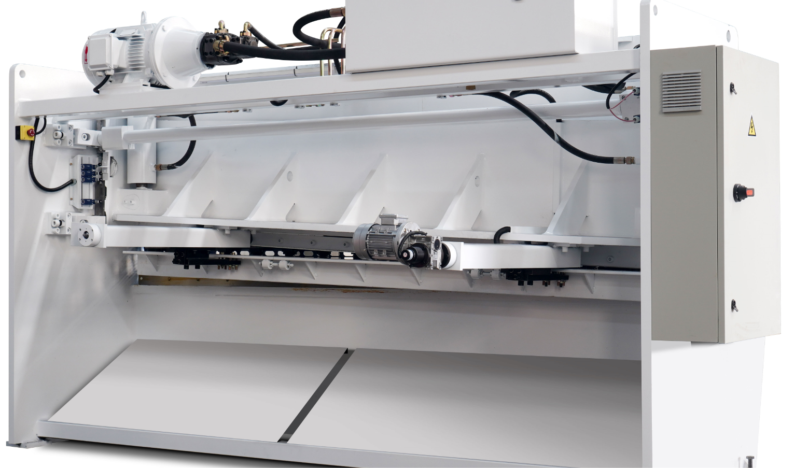
Cybelec CybTouch 8G features: intuitive HMI, touchscreen, automatic blade gap, automatic cutting angle/length, back gauge correction, anti-twist, sheet support, parking position, pressure management, wireless connection, over 10 languages.
Standard main parts: Estun servo & drive, Schneider electrics, BOSCH hydraulic valve, Sunny pump, EMB pipe connector, blades (China).
Option: E21S controller.
⚡ Fiber Laser Cutter
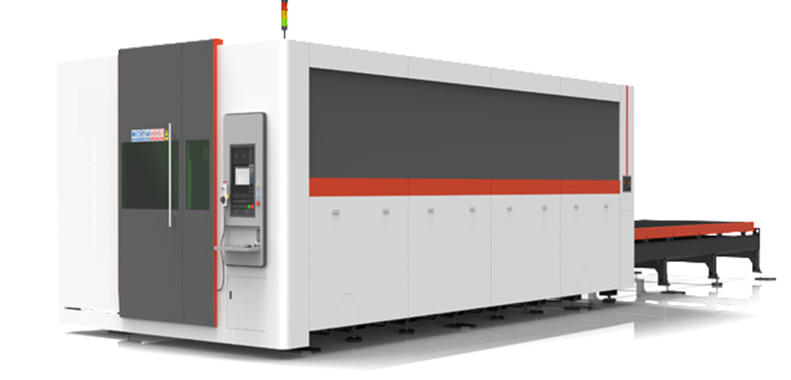
Structure: gantry dual drive, welded bed, high stability, X/Y single axis positioning speed ≥80m/min, max acceleration 1G (dual drive).
Function: automatic focusing cutting head, non-contact height tracking, anti-collision, auto edge finding, auto positioning, rollback.
CNC system: simple interface, offline programming, auto nesting, supports CAD/CAM, multiple languages (Chinese, English, Korean, Russian etc.)
Special functions: frog jumping, high-speed following, slope modulation, breakpoint continuation, interpolation compensation, flight punching, laser marking, expert database.
Main configuration: RK 4000W laser, JQ auto focusing head, YBL racks, PEK guide rails, Delta servo, Schneider electrical, BC CNC, special chiller.
⚙ CNC Lathe CK6130-700L
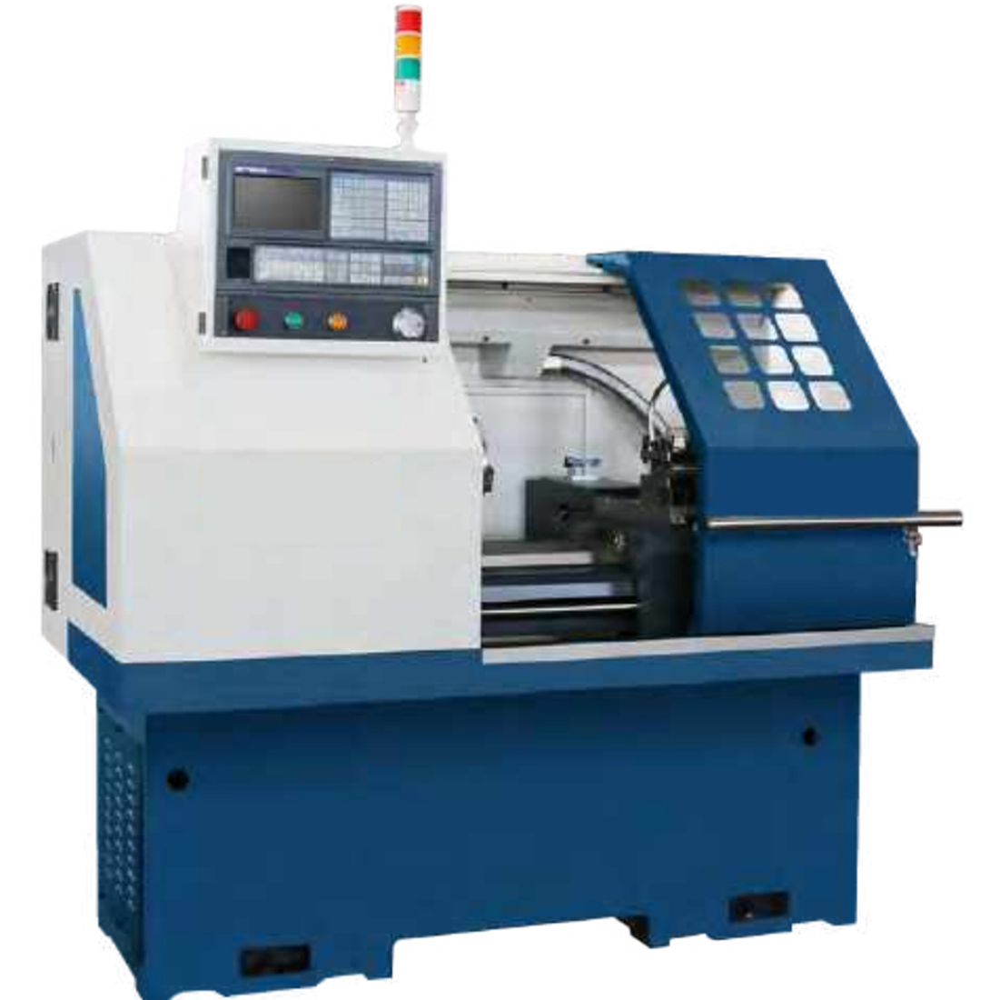
Model: CK6130-700L. Gang type tool post, 3-jaw manual chuck, double mountain guide.
CNC system: GSK980TDI. Electric 4-station toolpost, manual tailstock.
Other machine photos available on request.
▣ NC Press Brake
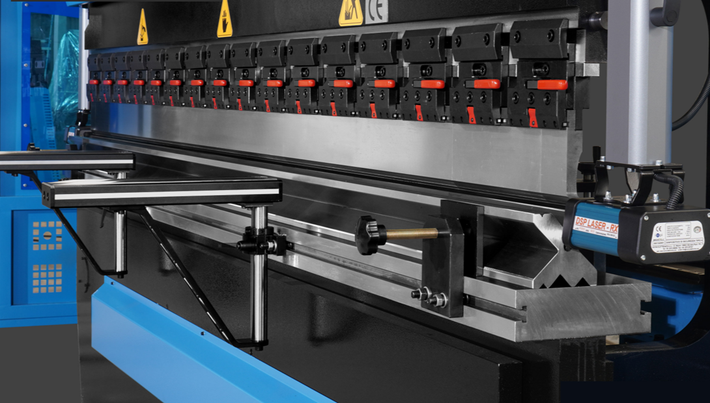
Main features: whole steel welded structure, vibration aging stress relief, torsion bar with hydraulics, integrated hydraulic system, upper transmission, pressure control, foot-petal switch (Karcon Korea), segmented upper punch, multi-V-die.
Back gauge & upper ram: automatic control, micro adjustment by manual and digital display. Oblique steel solid deflection compensation.
Main parts: WNM main motor, Schneider electrics, Yuhua cylinder, NOK seal, Rexroth valve, Sunny pump, Estun E300P controller, fast clamping, front/back protection fence.
📟 MAPER HT071
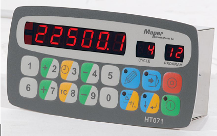
MAPER Automation – 52 years experience in metal plate processing (bending, shearing, rolling, stamping, plasma).
HT071 – positioning and axis control, editable parameters, flash memory (no battery), clear display, user-friendly keyboard.
Technical: 24Vdc, 7.2W; 4 insulation layers, relay output, optical insulator, 6 LED digits + 2 digits for cycle/program. 99 programs × 20 cycles. Modes: manual, semi-auto, auto, continuous auto. Offset, selection, total counter, timer, position OK, mm/inch display.
📊 Laser 3000W / 4000W
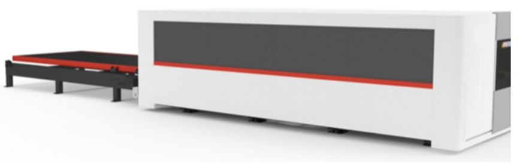
Detailed cutting thickness diagrams for 3000W and 4000W fiber laser sources. Includes carbon steel, stainless steel, aluminum, brass, copper with different assist gases (N₂, O₂, air).
Parameters: power, gas pressure, focal position, cutting speed, nozzle diameter. Expert database provides optimal settings.
💧 Waterjet 2060 / 2080
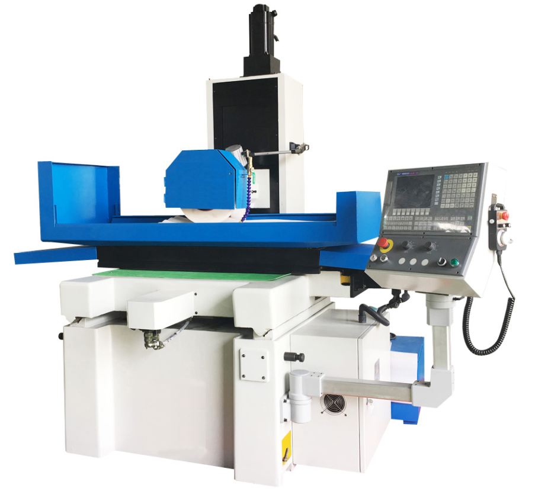
Large-format waterjet cutting tables with flying-arm structure. Same high-pressure system as 2030 series: C50V EHV, FLOW supercharger, HSEC accumulator, Rexroth pump, Siemens PLC.
Cutting head with self-correction, easy part replacement. Abrasive control valve with automatic sand suction. NEW-CAM software.